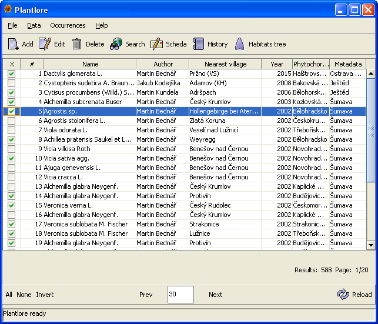
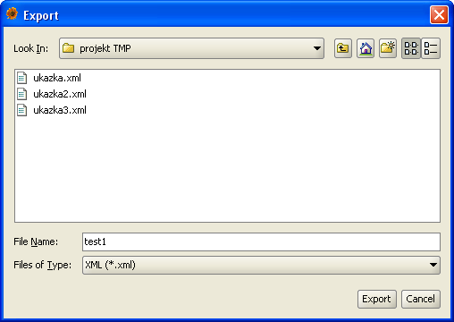
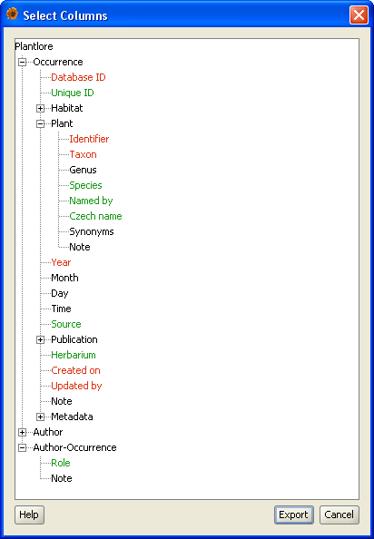
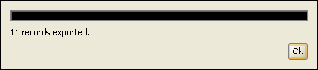

Your Occurrence data are stored in a database and cannot be accessed directly. In order to transfer your data from one computer to another, you must use Export and Import. Export allows you to "take" the Occurrence data from the database and store them into a file on your hard drive.
Export can be performed in every database after logging in - even in a remote database. However, if you are connected to a remote database and want to export the Occurrence data, you should take the capacity of the network connection you are using into account, because the amount of data transfered via the network may be huge and the whole process may be painfully slow.
There can run only one Export at a time.
First, you have to select some Occurrences in the Overview. In order to reduce the amount of records from which you choose, use Search. If you don't select any record, Plantlore acts as if all records were selected saving you the time to select them all by yourself.
You can see 11 records that are about to be exported in the picture below.

Export of the Occurrence data takes two steps.
Type in the name of the file and choose its format from the list of basic formats:

This step is optional. Only XML, CSV and StdOut support this option. The other formats export the records with all their attributes. You can select the desired attributes by clicking on them in the tree. The attributes displayed in red are compulsory if you are planning to Import the data back into Plantlore.
If you do not select any column, Plantlore acts as if all were selected.

After the selection of attributes if completed, export is started. You can follow the progress in a small window. If you decide to cancel the export, click on the "Cancel" button and export will be ended immediately. The file will contain the Occurrence data that were written before the operation was canceled. It is guaranteed that the format of the file is valid even if export is terminated prematurely either by the User or by an error.
